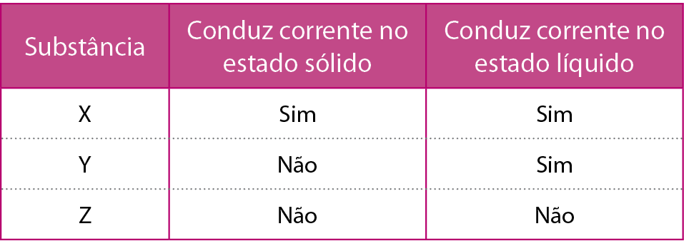

O sangue e os aerossóis são exemplos de dispersões coloidais.
[...] Os sistemas coloidais vêm sendo utilizados pelas civilizações desde os primórdios da humanidade. Os povos utilizaram géis de produtos naturais como alimento, dispersões de argilas para fabricação de utensílios de cerâmica
e dispersões coloidais de pigmentos para decorar as paredes das cavernas com motivos de animais e de caça.
[...]
Sistemas coloidais estão presentes no cotidiano desde as primeiras horas do dia, na higiene pessoal — sabonete, xampu, pasta de dente e espuma ou creme de barbear —, maquiagem — cosméticos — e no café da
manhã — leite, café, manteiga, cremes vegetais e geleias de frutas. No caminho para o trabalho, podemos enfrentar neblina, poluição do ar [...]. No almoço, temperos, cremes e maionese para saladas. [...]
JAFELICCI JUNIOR, Miguel; VARANDA, Laudemir C.
Química Nova na Escola . São Paulo, n. 9, p. 9, maio 1999. Disponível em: <http://qnesc.sbq.org.br/online/qnesc09/quimsoc.pdf>. Acesso em: 3 ago. 2021.
-
Você sabe qual é a definição de coloide?
-
Qual é a diferença entre um coloide e uma solução?
-
Toda dispersão é homogênea?

Neste capítulo serão abordadas as habilidades
EM13CNT205
e
EM13CNT307
.
Soluções
No livro 1, unidade 1, capítulo 4, aprendemos sobre as misturas e os métodos utilizados para separá-las, bem como os tipos de misturas e suas classificações. Uma
dispersão nada mais é que uma mistura – a qual pode ser homogênea (apresenta apenas uma fase) ou heterogênea (com duas fases ou mais). Nas dispersões, ocorre a mistura entre um disperso e um dispersante, em que
o disperso está em menor quantidade que o dispersante. Por exemplo, quando misturamos açúcar em água, ele é o disperso, e a água é o dispersante.
As dispersões recebem nomes diferentes de acordo com o tamanho das partículas que estão dispersas. As soluções, ou soluções verdadeiras, são aquelas em que as partículas têm tamanho menor que 1 nm. Um exemplo de solução é a mistura
de água e açúcar. As dispersões coloidais são compostas de partículas que têm de 1 a 1 000 nm, como o creme de barbear. Já as suspensões têm partículas maiores que 1 000 nm, como a mistura de água e areia.
Já vimos que soluções são misturas homogêneas que podem ser constituídas de duas ou mais substâncias, mas apresentam apenas uma fase. Nas soluções, nomeamos seus componentes de
solvente e
soluto . O solvente é geralmente líquido e está em maior quantidade, já o soluto é geralmente sólido e está em menor quantidade. Isso, porém, não significa que uma solução não possa ser sólida ou gasosa. Por esse motivo,
realizamos a classificação das soluções da seguinte maneira:
O efeito Tyndall acontece quando as partículas de uma dispersão coloidal interagem com a luz, ocasionando um efeito óptico. Observamos tal fenômeno, ao ver a poeira no ar devido a um raio de luz. Esse efeito também está presente
quando enxergamos partículas no feixe de luz dos faróis do carro na neblina.
gopfaster/iStockphoto.com
Condução de corrente elétrica
Sabemos que substâncias iônicas são formadas por cátions (
+
) e ânions (
–
), como o sal de cozinha (NaC
ℓ
), formado pelo cátion Na
+ e o ânion C
ℓ
– . Quando dissolvidas em água, essas substâncias liberam seus íons, e as cargas positivas e negativas ficam livres na solução. A presença dessas cargas torna a solução condutora de corrente elétrica, pois
os ânions se movimentam no sentido de um polo positivo, enquanto os cátions caminham no sentido de um polo negativo, gerando, assim, um fluxo de cargas. A água por si só não contém os íons necessários em quantidade suficiente
para ser considerada uma boa condutora, porém, ao adicionarmos certos compostos em água, como o cloreto de sódio, formamos uma solução aquosa eletrolítica, ou seja, com boa condutibilidade elétrica.
 Mais
Mais
Soluções eletrolíticas.
Quer ver na prática o conceito de solução eletrolítica e não eletrolítica? Acesse o vídeo e confira como soluções podem ou não acender uma lâmpada.
1
ITA-SP 2018 Para cada uma das dispersões coloidais de natureza definida na tabela abaixo, cite um exemplo prático, explicitando quais são o dispersante e o disperso. Complete a tabela.

Resolução:


Aplicando conhecimentos
1
O que são soluções sólidas? Dê dois exemplos.
2
A maionese é uma emulsão de óleo disperso em gema de ovo. Chamamos de emulsão as dispersões coloidais líquido-líquido, como é o caso. Qual das alternativas apresenta produtos considerados emulsões?
- Leite e tintas.
- Plástico e geleias.
- Margarina e detergente.
- Refrigerante e pérolas.
- Creme de chantili e gel de cabelo.
3
Entre as soluções citadas a seguir, quais acenderiam uma lâmpada em um sistema, ou seja, quais delas são eletrolíticas?
- Ácido clorídrico e água.
- Cloreto de potássio e água.
- Açúcar e água.
- Hidróxido de sódio e água.
- Apenas I.
- II e III.
- I, II e III.
- I, II e IV.
- Todas.
4
As dispersões podem ser classificadas em soluções, dispersões coloidais e suspensões, de acordo com o tamanho de suas partículas. Com base nisso, classifique as dispersões a seguir.
- Água e areia.
- Água e bicarbonato de sódio (fermento).
- Água e ácido acético (vinagre).
- Gelatina.
- I. Solução; II. Coloide; III. Solução; IV. Suspensão.
- I. Suspensão; II. Solução; III. Solução; IV. Coloide.
- I. Coloide; II. Solução; III. Coloide; IV. Suspensão
- I. Suspensão; II. Solução; III. Coloide; IV. Coloide.
- I. Solução; II. Suspensão; III. Solução; IV. Coloide.
5
Cesgranrio-RJ O ácido clorídrico puro (HC
ℓ
) é um composto que conduz muito mal a eletricidade. A água pura (H
2 O) é um composto que também conduz muito mal a eletricidade; no entanto ao dissolvermos o ácido na água, formamos uma solução que conduz muito bem a eletricidade, o que se deve à:
- dissociação da água em H
+ e OH
– .
- ionização do HC
ℓ
formando H
3 O
+ e C
ℓ
– .
- transferência de elétrons da água para o HC
ℓ
.
- transferência de elétrons do HC
ℓ
para a água.
- reação de neutralização do H
+ da água com C
ℓ
– do HC
ℓ
.
Consolidando saberes
1
UFU-MG O grafitismo é um tipo de manifestação artística surgida nos Estados Unidos, na década de 1970. No Brasil, o grafite chegou ao final dos anos de 1970, em São Paulo. Hoje, o estilo desenvolvido pelos brasileiros
é reconhecido entre os melhores do mundo. A tinta mais usada pelos grafiteiros é o spray em lata, que possui, até o final da década de 1980, o clorofluorcarboneto como propelente.
Disponível em: <http://www.mundoeducacao.com.br/artes/grafite.htm>. Acesso em: 14 jun. 2012.
O
spray em lata, utilizado na arte do grafite,
- possuía, em sua formulação, CFC, que colaborava para prevenir a degradação da camada de ozônio.
- deve ser armazenado em ambientes com incidência direta da luz solar.
- é uma dispersão coloidal, mantida sob pressão, de um líquido em um gás liquefeito.
- possui probabilidade de explodir diretamente proporcional à redução da temperatura.
2
UEL-PR A força e a exuberância das cores douradas do amanhecer desempenham um papel fundamental na produção de diversos significados culturais e científicos.
Enquanto as atenções se voltam para as cores, um coadjuvante exerce um papel fundamental nesse espetáculo. Trata-se de um sistema coloidal formado por partículas presentes na atmosfera terrestre, que atuam no fenômeno de espalhamento
da luz do Sol.
Com base no enunciado e nos conhecimentos acerca de coloides, considere as afirmativas a seguir.
- São uma mistura com partículas que variam de 1 a 1 000 nm.
- Trata-se de um sistema emulsificante.
- Consistem em um sistema do tipo aerossol sólido.
- Formam uma mistura homogênea monodispersa.
Assinale a alternativa correta.
- Somente as afirmativas I e II são corretas.
- Somente as afirmativas I e III são corretas.
- Somente as afirmativas III e IV são corretas.
- Somente as afirmativas I, II e IV são corretas.
- Somente as afirmativas II, III e IV são corretas.
3
Cesgranrio-RJ O colágeno é a proteína mais abundante no corpo humano, fazendo parte da composição de órgãos e tecidos de sustentação. Apesar de não ser comestível, seu aquecimento em água produz uma mistura de outras
proteínas comestíveis, denominadas gelatinas. Essas proteínas possuem diâmetros médios entre 1,0 nm e 1.000 nm e, quando em solução aquosa, formam sistemas caracterizados como
- soluções verdadeiras.
- dispersantes.
- coagulantes.
- homogêneos.
- coloides.
4
Unesp Três substâncias puras, X, Y e Z, tiveram suas condutividades elétricas testadas, tanto no estado sólido como no estado líquido, e os dados obtidos encontram-se resumidos na tabela.

Com base nessas informações, é correto classificar como substância iônica:
- Y e Z, apenas.
- X, Y e Z.
- X e Y, apenas.
- Y, apenas.
- X, apenas.
5
Enem A obtenção de sistemas coloidais estáveis depende das interações entre as partículas dispersas e o meio onde se encontram. Em um sistema coloidal aquoso, cujas partículas são hidrofílicas, a adição de um solvente
orgânico miscível em água, como etanol, desestabiliza o coloide, podendo ocorrer a agregação das partículas preliminarmente dispersas.
A desestabilização provocada pelo etanol ocorre porque:
- a polaridade da água no sistema coloidal é reduzida.
- as cargas superficiais das partículas coloidais são diminuídas.
- as camadas de solvatação de água nas partículas são diminuídas.
- o processo de miscibilidade da água e do solvente libera calor para o meio.
- a intensidade dos movimentos brownianos das partículas coloidais é reduzida.
6
UFJF/Pism-MG 2016 O cientista Svante August Arrhenius estudou o efeito de passagem de corrente elétrica na migração de espécies eletricamente carregadas. Assinale a alternativa que descreve a situação na qual ocorre
condução de corrente elétrica.
- Substância iônica no estado sólido.
- Substância molecular não ionizada em solução.
- Substância iônica em solução.
- Substância molecular no estado gasoso.
- Substância molecular em estado sólido.
7
Famerp-SP 2017 A mistura conhecida como soro fisiológico é um exemplo de _________, na qual o ____________ é a água e o ______________ é o ____________ de sódio.
As lacunas do texto são, correta e respectivamente, preenchidas por:
- solução – solvente – soluto – cloreto.
- solução – solvente – soluto – bicarbonato.
- solução – soluto – solvente – cloreto.
- suspensão – solvente – soluto – bicarbonato.
- suspensão – soluto – solvente – cloreto.
8
PUC-Rio Duas soluções ácidas de mesma concentração são preparadas pela adição de 1 mol de ácido para formar 1 L de solução aquosa. Os terminais de um circuito elétrico interrompido, conectado a uma lâmpada, são mergulhados
nas soluções. A primeira solução, de ácido clorídrico, fecha o circuito e faz a lâmpada acender com alta intensidade. Já a segunda solução, de ácido acético, apenas faz a lâmpada brilhar fracamente. Sobre esse experimento
e as substâncias envolvidas, indique a afirmativa
incorreta:
- Se a solução de ácido clorídrico fosse diluída com a adição de mais 1 L de água, a lâmpada acenderia com o mesmo brilho observado antes da diluição.
- O ácido clorídrico é um eletrólito mais forte que o ácido acético.
- Os responsáveis pela passagem de corrente elétrica na solução são os íons liberados pelos ácidos quando dissolvidos na água.
- Se os terminais fossem mergulhados na água pura, não haveria acendimento da lâmpada.
- O ácido acético dissolvido em água forma íons menos efetivamente do que o ácido clorídrico dissolvido em água.
9
UFSCar-SP Sal de cozinha (NaC
ℓ
) e açúcar (sacarose) são sólidos brancos solúveis em água. Suas soluções aquosas apresentam comportamentos completamente diferentes quanto à condução de corrente elétrica. É correto afirmar que:
- o cloreto de sódio é um composto iônico e sua solução aquosa conduz corrente elétrica, devido à presença de moléculas de NaC
ℓ
. A sacarose é um composto covalente e sua solução aquosa tem viscosidade muito alta, diminuindo a condutividade da água.
- uma substância como o cloreto de sódio, que em solução aquosa forma íons, é chamada de eletrólito. A solução de sacarose conduz corrente elétrica, devido à formação de ligações de hidrogênio entre as moléculas de sacarose e
água.
- o cloreto de sódio é um composto iônico e suas soluções aquosas conduzem corrente elétrica, devido à presença de íons livres. A sacarose é um composto constituído de moléculas e suas soluções aquosas não conduzem corrente elétrica,
pois as moléculas neutras de sacarose não contribuem para o transporte de cargas.
- a dissolução de sacarose em água leva à quebra das moléculas de sacarose em glicose e frutose e estas moléculas conduzem corrente elétrica. A solução de sal, por sua vez, apresenta condutividade menor que a da água destilada.
- soluções aquosas de sacarose ou de cloreto de sódio apresentam condutividade elétrica maior do que aquela apresentada pela água pura, pois há formação de soluções eletrolíticas. Os íons formados são os responsáveis pelo transporte
de cargas em ambos os casos.